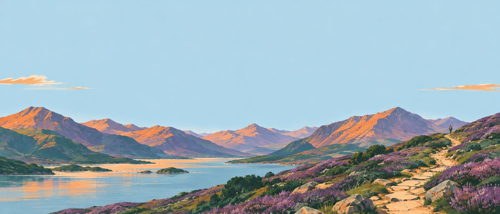
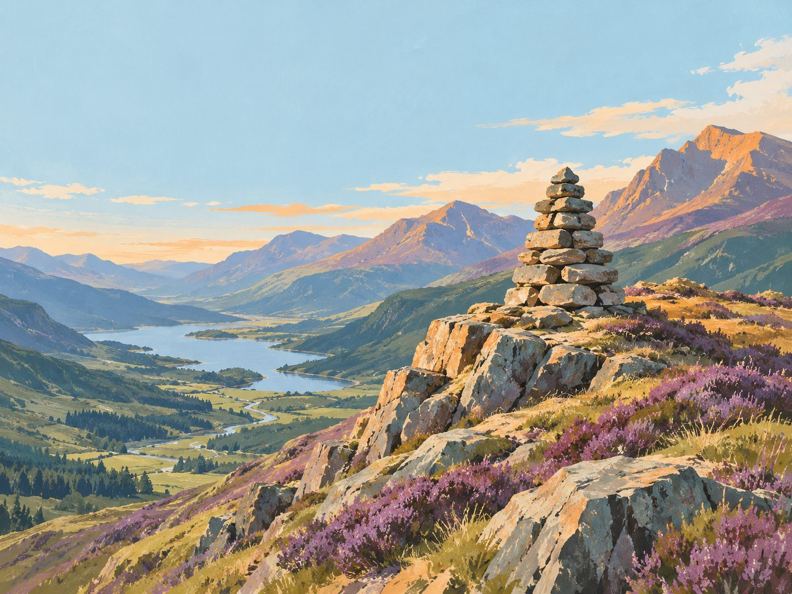
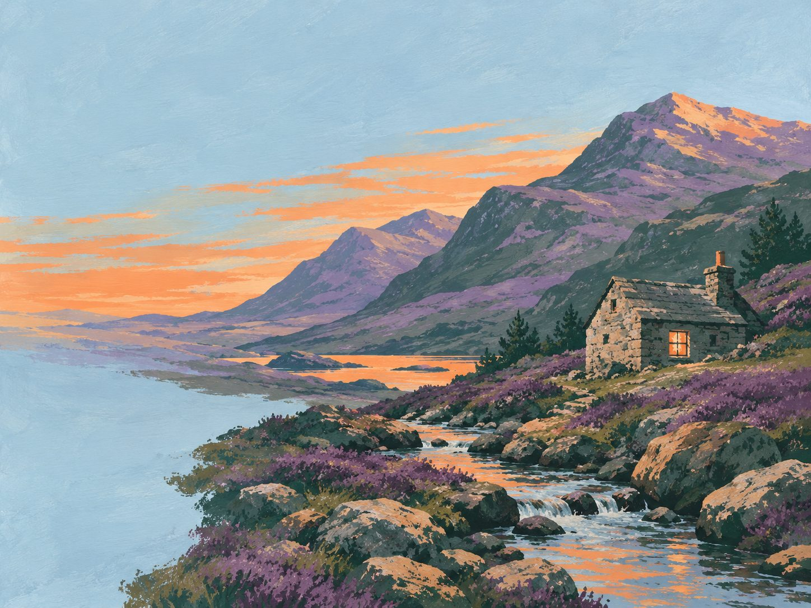

A first Munro
“First Munro from Glasgow, on a clear path the whole way, five hours, home for tea.”
Describe the hill day you want. Switchback plans the route, the timings, the weather window and the last point to turn back.
Sample plan This page is a preview, so it shows the example route whatever you type.
The Mamores from Glen Nevis · Saturday 17 October
Escape: before Stob Bàn, the quickest way down is back over Mullach nan Coirean the way you came up.
Planning help, not a guarantee. Read the mountain forecast on the morning and carry a map and compass.
See how the day reads
Each one fills the route card. Change the start, the hours or the hill, then plan.
“First Munro from Glasgow, on a clear path the whole way, five hours, home for tea.”
“Two tops on a ridge near Glencoe, airy but no hands-on scrambling, back by 5.”
“Walk in to a bothy on Friday after work, out by Saturday lunchtime, rain likely.”
“Trail run in the Cairngorms, 25 km, runnable paths, finish before the wind arrives.”
Every plan leaves as a GPX file for OS Maps, Garmin, Komoot or Strava a one-page route card to print a link for whoever's at home
Why plan it
The sample plan from the route card above, drawn as height against the clock, with the weather window underneath.
Gusts 40 mph on the tops from 15:00
Last light 18:15

Timings
Tell it how your last hill went, or give it a GPX file. Each leg is timed from distance and height gain with Naismith's rule, then adjusted to how you actually walk.

Sat 17Go · off the tops by 14:30
0710131619
Sun 18Gusts 55 mph on the tops all day
Try a low-level walk: Steall Falls from the top car park, 2 h.
Weather
Switchback reads the summit forecast for the hours you'll actually be high, and tells you which day works, which hill, and which way round to walk it.
Leave a copy
Every plan makes a route card you can print and a link you can send. It says where you're going, when you'll be back, and what to do if you're not.
Safety
A plan made on Friday night can't see Saturday's ground. Switchback does the arithmetic; the judgement on the hill is still yours.
No contract. Cancel from your account page and keep every route card you've made.
£0
3 planned routes a month
£6 a month
Unlimited routes
Ask a person
hello@switchback.scotRoute questions go to someone who walks these hills. Usually answered within a day.
No. It's planning help, not a guarantee. It does the timings and reads the forecast so you start the day with good numbers, but conditions on the hill decide, and so do you.
Public mountain forecasts for the summits you'll be on. Every plan prints the source and the time it was issued, so you can check the full forecast yourself on the morning.
The route card and GPX file do: download them before you leave. Planning a new route needs a connection.
Free plans start from Naismith's rule and the pace you pick. On Hill, give it GPX files from past walks and it adjusts for how you go on steep ground and on the way down.
Yes, with care. It shortens the day to the daylight, marks avalanche-prone slopes and links the avalanche report for the area. It won't tell you a slope is safe.
Your routes stay yours. You can plan again next month, or move to Hill for £6 a month.